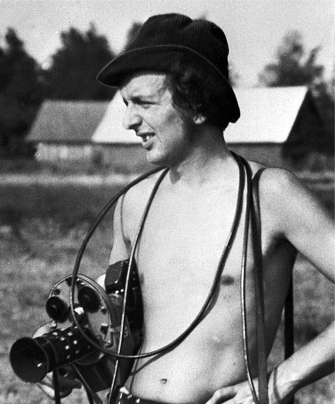

Mark Soosaar (officially Mark-Toomas Soosaar; born 12 January 1946 in Viljandi) is an Estonian film director, cinematographer, screenwriter and politician. Soosaar graduated from the All-Union State Institute of Cinematography in 1970. He worked for Eesti Televisioon from 1970 until 1978 and Tallinnfilm from 1978 until in 1991 as a director and cinematographer before moving to Pärnu and founding his own film studio, Weiko Saawa Film. He is the director of Museum of New Art, as well the founder chairman of the Kihnu Cultural Institute.
The film "Woman of Kihnu" (in Estonian "Kihnu Naine" ) was recorded by Mark Soosaar in 1974, only after 30 years Kihnu language and culture was recognised by UNESCO as a pearl of intangible heritage of mankind. The world premiere of "Woman in Kihnu" took place in Paris, Cinematheque Francaise in November 1975 and was presented in program of Venice Film Festival in 1976.
Please click on this link to find out how Soosaar fell in love with the island Kihnu and its people/culture.
Please click on this link to find out more about Kihnu Cultural Institute.
Kihnu cultural space was inscribed in 2008 on the Representative List of the Intangible Cultural Heritage of Humanity. In total only 5 cultural treasures from Estonia are inscribed on the list.
Please click on this link to find out more about UNESCO an the Kihnu cultural space the Representative List of the Intangible Cultural Heritahe of Humanity